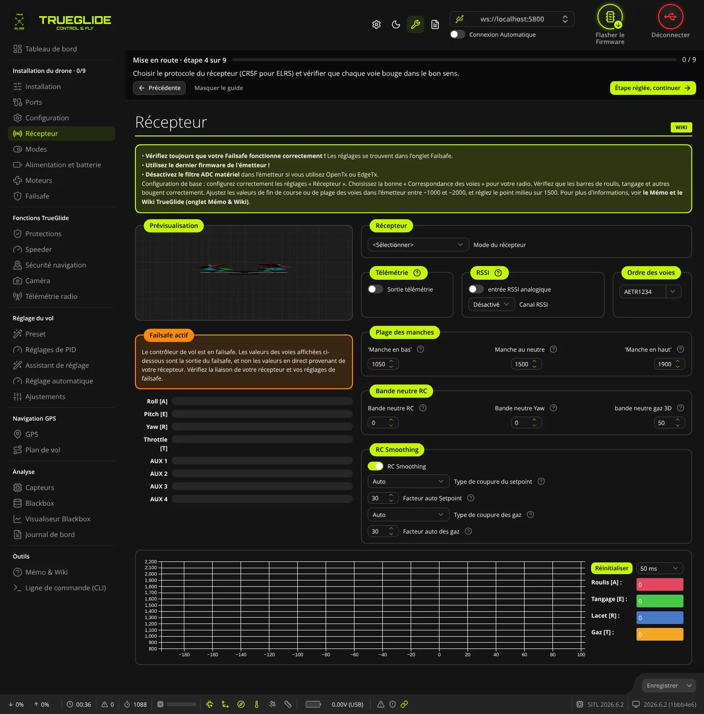
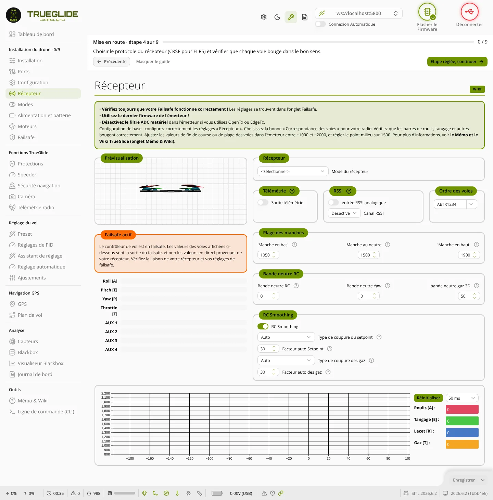

Récepteur
L'onglet Récepteur (groupe « Installation du drone ») sert à choisir comment la carte reçoit la radio (protocole du récepteur), l'ordre des voies, la plage des manches et le lissage des commandes. Il montre en direct la valeur de chaque voie, pour vérifier que chaque manche et chaque interrupteur bouge dans le bon sens.


Prévisualisation et barres des voies
- Prévisualisation : un petit modèle 3D tourne selon les manches de roulis, tangage et lacet, avec vos réglages de rates. Il simule une rotation : il ne montre pas l'attitude réelle du drone.
- Failsafe actif : cadre orange affiché quand la carte est en failsafe ou a perdu la liaison radio. Les valeurs des voies affichées sont alors celles du failsafe, pas celles de votre radio. Les barres deviennent orange.
- Barres Roll [A], Pitch [E], Yaw [R], Throttle [T], puis AUX 1, AUX 2… : une barre par voie, avec sa valeur en microsecondes (µs). Échelle de 800 à 2200. Sans voie active, les barres sont vides et sans chiffre.
Cadre « Récepteur »
- Mode du récepteur : comment la radio arrive à la carte.
- Série (via UART) : récepteur sur un port série (ExpressLRS, Crossfire, SBUS…). Le cas le plus courant.
- Rx SPI (par exemple, Rx intégrée) : récepteur intégré à la carte.
- PPM/CPPM (fil unique), PWM (un fil par canal) : anciens récepteurs, si le firmware les contient.
- MSP (contrôle via port MSP) : commandes envoyées par MSP (par exemple depuis le logiciel).
- Type de récepteur série (mode Série) : protocole du récepteur. Pour ExpressLRS, choisissez
CRSF. La liste a un champ de recherche. Les protocoles absents du firmware sont grisés ; un message prévient si le protocole choisi n'est pas pris en charge. Le port du récepteur doit avoir Serial Rx dans l'onglet Ports. - Récepteur Bus SPI (mode Rx SPI) : protocole du récepteur intégré (FrSky, FlySky, Spektrum,
EXPRESSLRS…). - Phrase de Bind (récepteur SPI ExpressLRS seulement) : la phrase d'appairage ExpressLRS. Les 6 nombres entre parenthèses sont l'identifiant calculé depuis la phrase. Le logiciel garde la phrase en mémoire sur cet ordinateur.
- ID Model Match (récepteur SPI ExpressLRS) : numéro de modèle ExpressLRS, de 0 à 255.
Télémétrie, RSSI et ordre des voies
- Télémétrie → Sortie télémétrie : envoie la télémétrie de la carte vers la radio par le récepteur.
- RSSI → entrée RSSI analogique : lit la force du signal sur une broche analogique de la carte.
- RSSI → Canal RSSI : voie qui porte la force du signal (AUX 1 et suivantes), ou Désactivé.
- Ordre des voies : 8 lettres, A (ailerons = roulis), E (profondeur = tangage), R (dérive = lacet), T (gaz), puis 1 à 4 (voies AUX). Le menu à côté propose FrSky / Futaba / Hitec (AETR1234) et Spektrum / Graupner / JR (TAER1234). Pour ExpressLRS et la plupart des radios EdgeTX, c'est en général AETR1234. Une saisie incorrecte (pas 8 lettres, lettre en double) est annulée.
Changer le mode du récepteur, la sortie télémétrie ou l'entrée RSSI analogique demande un redémarrage de la carte : le bouton d'enregistrement s'en charge.
Plage des manches et bandes neutres
Valeurs en microsecondes (µs).
- 'Manche en bas' (1000 à 1200) : sous cette valeur, le manche est considéré en bas.
- Manche au neutre (1401 à 1599) : valeur du centre des manches.
- 'Manche en haut' (1800 à 2000) : au-dessus de cette valeur, le manche est considéré en haut.
- Bande neutre RC (0 à 32) : zone morte autour du centre pour le roulis et le tangage.
- Bande neutre Yaw (0 à 100) : zone morte autour du centre pour le lacet.
- bande neutre gaz 3D (0 à 100) : zone neutre des gaz, pour le mode 3D seulement.
Dans la radio, réglez les voies pour aller d'environ 1000 à 2000, avec le centre à 1500.
RC Smoothing (lissage des commandes)
- RC Smoothing : active le lissage des commandes radio.
- Type de coupure du setpoint : Auto (conseillé) ou Manuel. En Manuel, le champ Fréquence de coupure de l'entrée (setpoint) apparaît (Hz, 0 à 255).
- Facteur auto Setpoint (0 à 250) : plus haut = commandes plus lisses mais plus de retard. Le texte d'aide du logiciel donne 30 par défaut.
- Type de coupure des gaz : Auto ou Manuel ; en Manuel, Fréquence de coupure des gaz (Hz, 0 à 255).
- Facteur auto des gaz (0 à 250) : visible en Auto.
Le mode Manuel est déconseillé avec les protocoles dont la cadence change en vol (Crossfire, ExpressLRS).
Graphique des voies
En bas, un graphique trace les dernières valeurs de chaque voie (axe de 800 à 2200). À droite, les valeurs en direct de Roulis [A] :, Tangage [E] :, Lacet [R] : et Gaz [T] :. Le menu règle la cadence de lecture (10 ms à 1000 ms, gardée d'une session à l'autre) ; Réinitialiser la remet à 50 ms.
Vérifier les voies
- Allumez la radio, puis branchez la batterie, hélices retirées.
- Le cadre Failsafe actif doit disparaître et les barres doivent montrer des valeurs.
- Manche de roulis à droite : seule la barre Roll [A] doit monter. Faites de même pour le tangage (manche vers l'avant = valeur qui monte), le lacet et les gaz.
- Si une barre ne correspond pas, corrigez l'Ordre des voies. Si le sens est inversé, inversez la voie dans la radio.
- Basculez chaque interrupteur : la barre AUX correspondante doit changer.
Boutons du bas
- Enregistrer : envoie les réglages et les enregistre dans la carte. Si le mode du récepteur, la télémétrie ou le RSSI analogique ont changé, la carte redémarre ; sinon, le journal affiche « Configuration enregistrée. ». Actif seulement après un changement.
- Flèche à côté : Enregistrer ou Rafraîchir (relit les réglages de la carte et abandonne les changements non enregistrés).
- Appairer le récepteur : visible seulement si la carte sait lancer l'appairage ; envoie une demande d'appairage au récepteur.
- Émulateur radio : visible seulement en mode MSP ; ouvre une petite fenêtre avec des manches virtuels qui envoient les commandes à la carte.
Étape suivante : attribuer les interrupteurs dans l'onglet Modes.